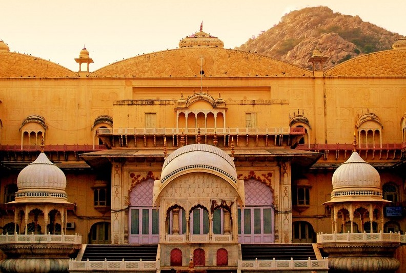
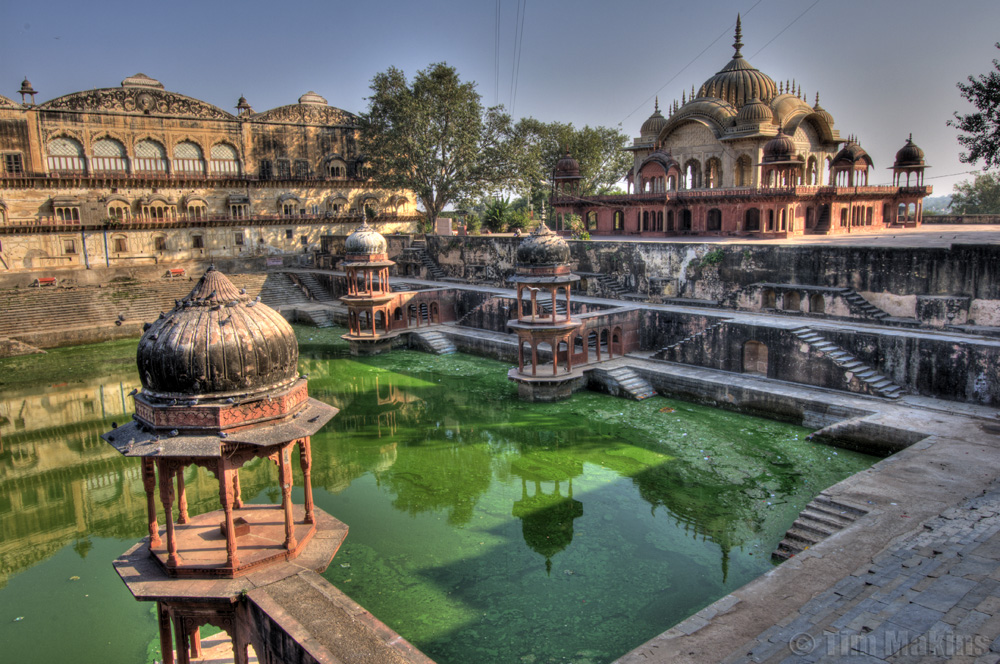
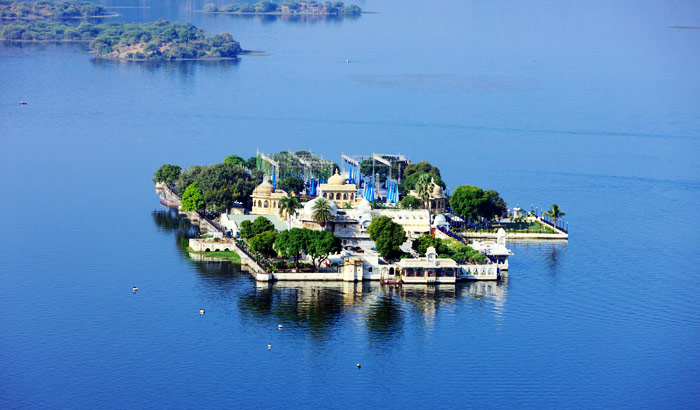
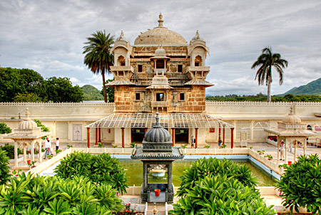
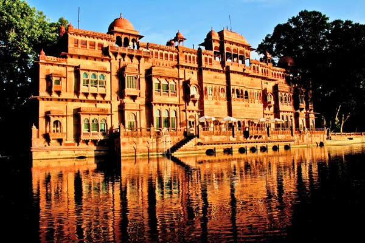
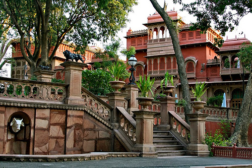
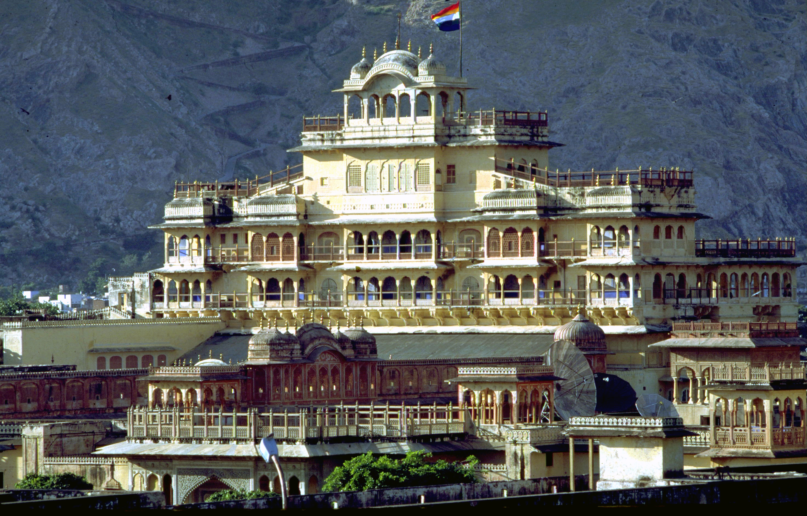
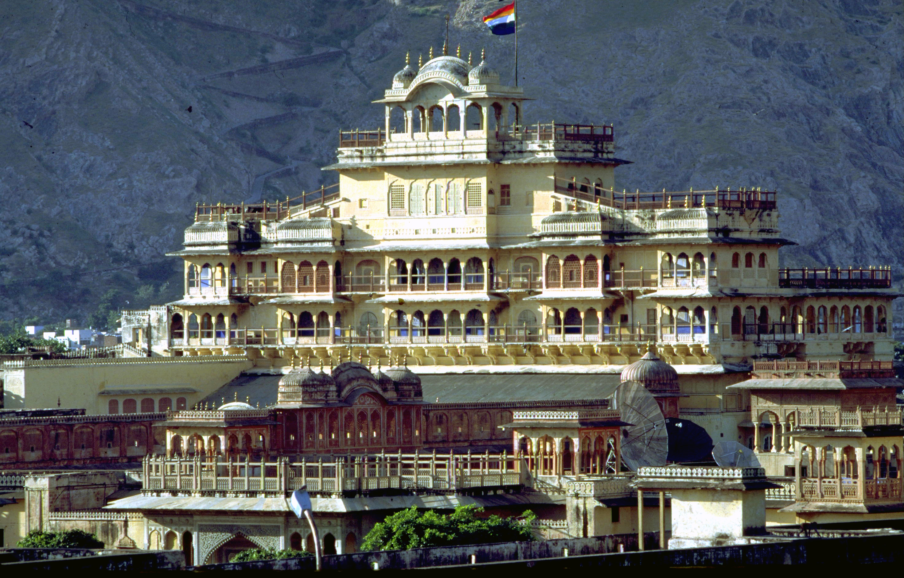
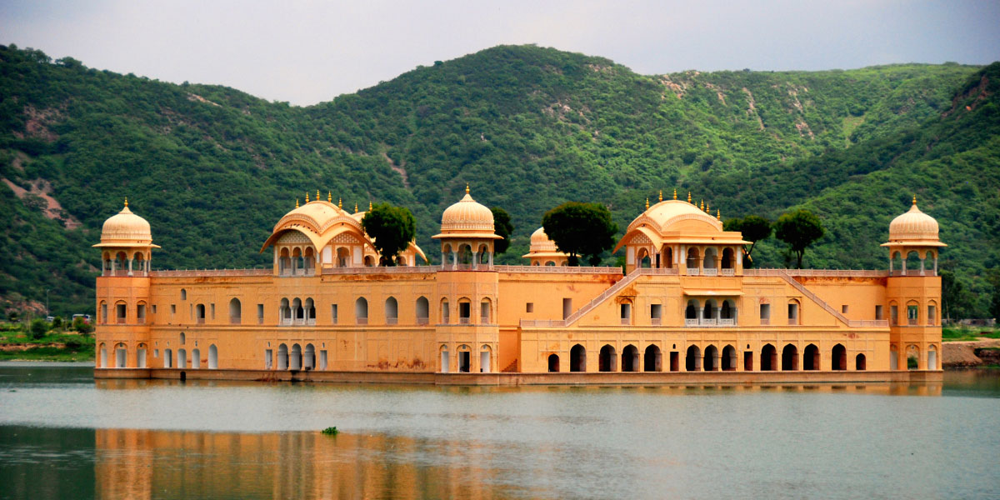
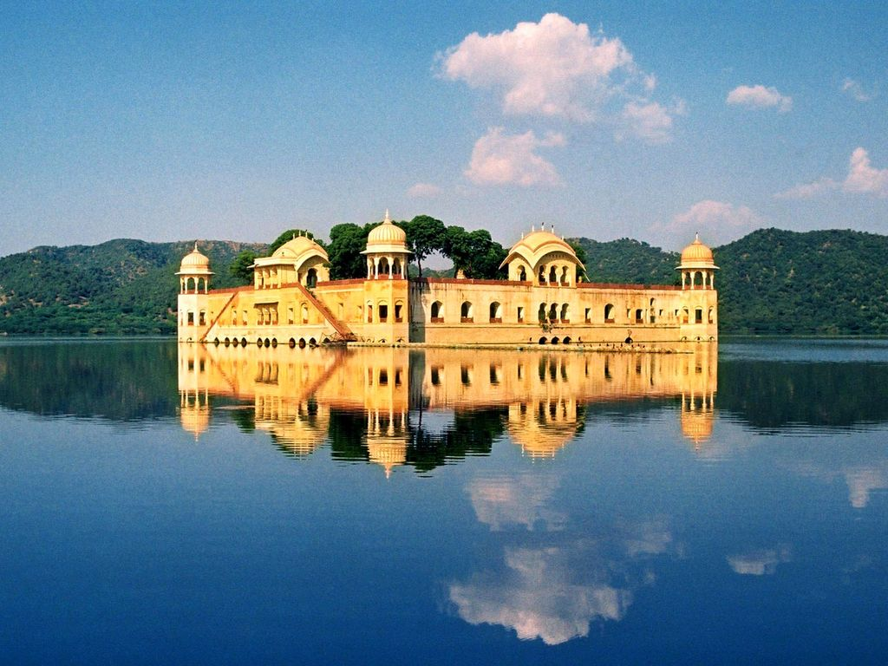

Umaid Bhawan Palace, located at Jodhpur in Rajasthan, India, is one of the world's largest private residences. A part of the palace is managed by Taj Hotels. Named after Maharaja Umaid Singh, grandfather of the present owner Gaj Singh of the palace, this edifice has 347 rooms and serves as the principal residence of the erstwhile Jodhpur royal family. A part of the palace also houses a museum. Umaid Bhawan Palace was called Chittar Palace during its construction due to use of stones drawn from the Chittar hill where it is located. Ground for the foundations of the building was broken on 18 November 1929 by Maharaja Umaid Singh and the construction work was completed in 1943. The Palace was built to provide employment to thousands of people during the time of famine. Contents
1.ALWAR PALACE
 
The City Palace of Alwar is known as the Vinay Vilas Mahal. It is standing huge in the heart of Alwar City of Rajasthan. The City Palace, of Alwar, was built up by Raja Bakhtayar Singh in the year 1793. The building is a perfect example of Indo Islamic architecture. The prehistoric city of Alwar is settled at the slopes of the Aravalli Hills has converted into a crowded trade center in recent times. But its rich history has left many examples through many temples, forts, tombs, gardens and palaces.Tourists who curiously venture to Rajasthan’s northeastern city of Alwar, will be met by a sprawling splendorous City Palace. Vinai Vilas Mahal (as it is known locally) has certainly seen better days. It’s ramshackle appearance pails in comparison to the more widely visited palaces of Rajasthan. Yet, there is a perplexing amount of beauty to be seen if one can look past the street dogs lounging among bits of crumbling plaster exterior.
2.JAGMANDIR PALACE
 
Jag Mandir is a palace built on an island in the Lake Pichola. It is also called the "Lake Garden Palace". The palace is located in Udaipur city in the Indian state of Rajasthan. Its construction is credited to three Maharanas of the Sisodia Rajputs of Mewar kingdom. The construction of the palace was started in 1551 by Maharana Amar Singh, continued by Maharana Karan Singh (1620–1628) and finally completed by Maharana Jagat Singh I (1628–1652). It is named as "Jagat Mandir" in honour of the last named Maharana Jagat Singh. The royal family used the palace as a summer resort and pleasure palace for holding parties. The palace served as a refuge to asylum seekers on two separate occasions.
3.GAJNER PALACE
 
Gajner Palace is a jewel in the Thar Desert, built by HH Maharaja Sir Ganga Singh of Bikaner on the edge of a lake. The property was converted into a heritage hotel in 1976.Lose yourself in this sprawling majestic palace, with its distinctive terraces and balconies revered for its fabulous setting and unhurried way of life, explore a world of nature-walks, boat-rides, sanctuary dinners and desert safaris. Discover Rajasthan best kept secret, just 30-minutes drive away from Bikaner.The hotel's compound stretches over 6000 acres. The palace was primarily a hunting resort during the days of the British Raj and attracted several dignitaries, including the Prince of Wales in 1905, Governor General Lord Elgin, Lord Erwin in 1927 and Lord Mountbatten when he was Viceroy of India. The Imperial Sand Grouse shoots at Gajner Palace during the Christmas season was the most sought after invitation in the indian social calendar.
4.JAIPUR CITY PALACE
 
City Palace, Jaipur, which includes the Chandra Mahal and Mubarak Mahal palaces and other buildings, is a palace complex in Jaipur, the capital of the Rajasthan state, India. It was the seat of the Maharaja of Jaipur, the head of the Kachwaha Rajput clan. The Chandra Mahal palace now houses a museum but the greatest part of it is still a royal residence. The palace complex, located northeast of the centre of the grid-patterned Jaipur city, incorporates an impressive and vast array of courtyards, gardens and buildings. The palace was built between 1729 and 1732, initially by Sawai Jai Singh II, the ruler of Amber. He planned and built the outer walls, and later additions were made by successive rulers continuing up to the 20th century. The credit for the urban layout of the city and its structures is attributed to two architects namely, Vidyadhar Bhattacharya, the chief architect in the royal court and Sir Samuel Swinton Jacob, apart from the Sawai himself who was a keen architectural enthusiast. The architects achieved a fusion of the Shilpa Shastra of Indian architecture with Rajput, Mughal and European styles of architecture.
5.JAL MAHAL
 
Jal Mahal (meaning "Water Palace") is a palace located in the middle of the Man Sagar Lake in Jaipur city, the capital of the state of Rajasthan, India. The palace and the lake around it were renovated and enlarged in the 18th century by Maharaja Jai Singh II of Amber. "The Jal Mahal palace has got an eye-popping makeover. Traditional boat-makers from Vrindavan have crafted the Rajput style wooden boats. A gentle splashing of oars on the clear lake waters takes you to Jal Mahal. You move past decorated hallways and chambers on the first floor to climb all the way up to the fragrant Chameli Bagh. Across the lake, you can view the Aravalli hills, dotted with temples and ancient forts, and on the other side, bustling Jaipur. The most remarkable change is in the lake itself. The drains were diverted, two million tonnes of toxic silt were dredged from the bottom, increasing its depth by over a metre, a water treatment system was developed, local vegetation and fish reintroduced, the surrounding wetlands regenerated and five nesting islands created to attract migratory birds.
Follow us on
©Copyright-2018 Hamara Rajasthan.com. (All Rights Reserved)